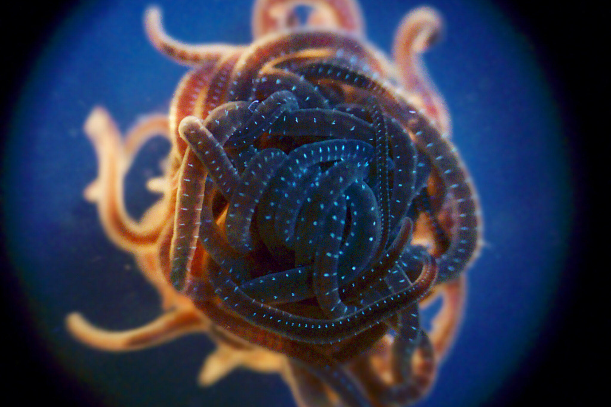

The Chameleon Parasite is an ancient entity that has lived alongside humanity since the dawn of our species. It first emerged during the early days of human evolution, when our ancestors—apes and chimpanzees—roamed the Earth. The parasite, initially a small, almost invisible organism, had the unique ability to infiltrate a host's bloodstream, absorb their biological essence, and mimic their form. In the early days, it preyed upon primal hominids, lurking in the shadows of dense jungles and savannas. By absorbing the blood and tissue of its victims, the Chameleon Parasite could perfectly replicate their appearance, gaining their memories, instincts, and behaviors. This allowed it to blend seamlessly into early tribes, becoming indistinguishable from the host it had replaced.
As humanity evolved, so did the parasite. It adapted to modern human physiology and intelligence, refining its ability to mimic its victims not just physically, but emotionally and psychologically as well. Over the centuries, it silently followed human civilizations, moving from one individual to the next, disappearing into the crowd. It lived through the rise and fall of empires, the chaos of wars, and the spread of human settlements. Despite its need to absorb the essence of its victims to survive, the Chameleon Parasite became an expert in hiding its presence, often assuming the identity of influential figures, thereby shaping human history without ever being detected. Every time a "death" occurred, the parasite would simply take another host, continuing its existence undisturbed.
In the modern era, the Chameleon Parasite remains undetected, lurking among humans in secret. It has evolved to become nearly flawless in its mimicry, able to replicate complex personalities and social behaviors without suspicion. In a world filled with billions of people, the parasite has a near-endless supply of hosts, moving effortlessly through society. Today, it exists in the highest echelons of power, as well as in the lives of ordinary individuals. It survives by taking on new identities whenever necessary, leaving no trace of its former victims behind. While modern science has yet to uncover its existence, the Chameleon Parasite continues to thrive, silently blending into the very fabric of human life.
